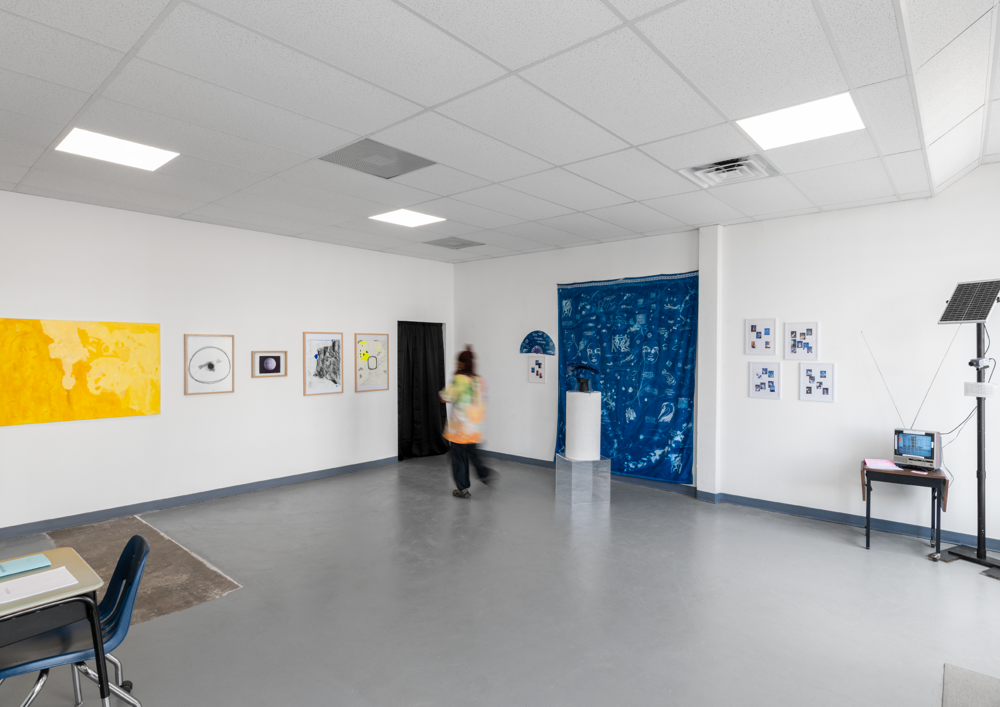
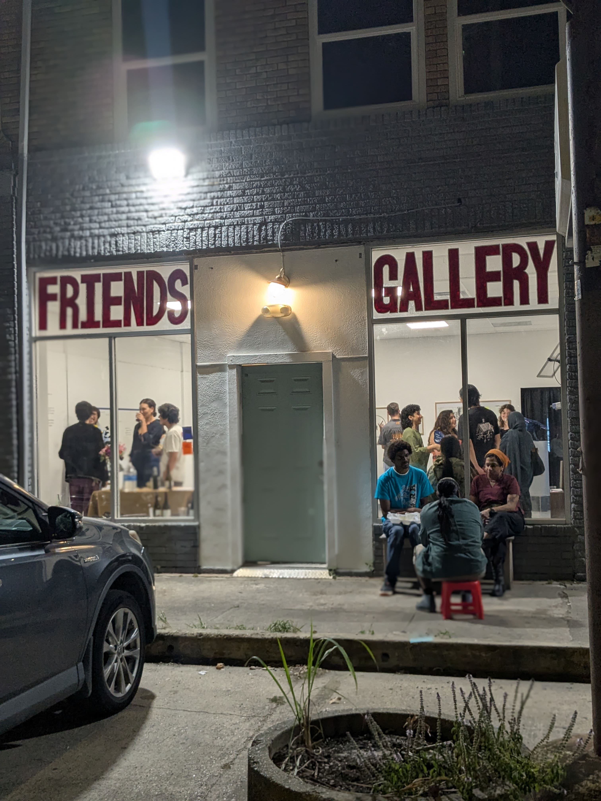

.svg)
Homepage < Archive < Community Engagement < Glitch Lab <
Glitch Lab Art Residency Show




The Glitch Lab Residency Art Show and Programming is the final chapter—or Pop-Down—of the Houston Pop-Up Project by the Edgelands Institute. Hosted at Friends Gallery, this week-long public program brings together artists, researchers, and community members to explore how surveillance, technology, and education shape the lives of young people today. Through conversations, workshops, and creative experiments, the Glitch Lab reimagines what safety, freedom, and learning can look like in an age of digital control.
The residency’s programming includes a conversation with Dr. Simone Browne, author of Dark Matters: On the Surveillance of Blackness (Nov. 5), an Artist Zine Launch with music and free zines (Nov. 6), a Take Back Your Data workshop with Paraspace Books (Nov. 7), a contact mic workshop titled Seeing with Our Ears with Alex Abalos (Nov. 8), and a tour and discussion for youth and educators on Teaching in the Age of AI with Jeremy Eugene (Nov. 9).
Together, these events mark the culmination of months of collaboration in Houston—transforming research into dialogue, art into resistance, and surveillance into a space for imagination.